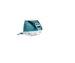

Solution Apple

Un OS Atari dessus ?
MagiC de ASH/ASF

Solution Milan

|
Laurent FAVARD |
| Pas de mise à jour |
Ici sont disponibles
mes programmes libre, donc avec codes sources, sous forme de fichiers ZIP.
| AADS | 11/05/2000 | Version 1.263 | Programming GEM library |
| Asm6805 | 1995 | Version 1.40 | Motorola 6805 assembler |
| Cam | 05/05/1997 | Version 2.11 | Cross Assembler Motorola HC11/6805 (TTP) |
| Fun030 | 05/08/1998 | Version 1.60 | To drive Falcon sound matrix |
| GemSight | 27/08/1995 | Version 1.00 | To spy messages and events |
| Install | 30/12/1995 | Version 1.10 | Installer/Uninstaller |
| Joystick | 20/09/1998 | Version 1.00 | For Falcon enhanced joystick port |
| NVRAM Setup | 24/10/1995 | Version 1.00 | Set the Falcon and TT NVRAM |
Descriptions
- Librairie GEM AADS
- Cette librairie permet de programmer beaucoup plus facilement sous GEM des applications, en offrant des moyens de prise en charge automatique de la gestion des fenêtres, des formulaires, menus déroulants, etc...Le code source complet est livré dans le fichir ZIP ainsi que quelques exemples.
- Asm6805
- Il s'agit d'un assembleur pour Microcontroleur de la famille 6805 de Motorola. Entièrement sous GEM, utilise la librairie AADS et est livré avec codes sources.
- CAM
- Pour Cross-Assembleur Motorola, est le successeur de Asm6805, mais en version Cross, car il peut désormais assembler du code 6805 et HC11. Il n'est disponible qu'en version .TTP, faute de temps pour une interface GEM, et est livré avec son code source.
- Fun30
- Est un petit utilitaire qui permet de configurer la matrice son du Falcon. Programmé sous GEM (Aads) et code source donné.
- GemSight
- Utilitaire pour espionner les messages et évènements d'une autre application. Ne fonctionne pour le moment qu'avec un AES 4.0 et plus, dans un environnement Multi-tâches.
- Install
- Programme d'installation et de désinstallation d'applications. Codes sources avec.
- Joystick
- Ce programme permet de tester et montrer comment utiliser les ports Joysticks étendus du Falcon, en branchant soit un Paddle (analogique) ou une manette de jeux jaguar. Un schéma illustre comment faire un petit paddle simple.Code sources livrés.
- NVRAM Setup
- Utilitaire pour configuer la Mémoire non volatille des Falcons et TTs.Code sources livrés.